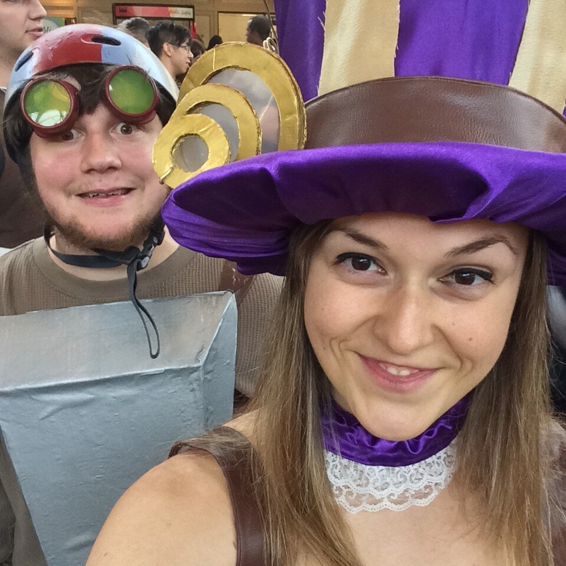
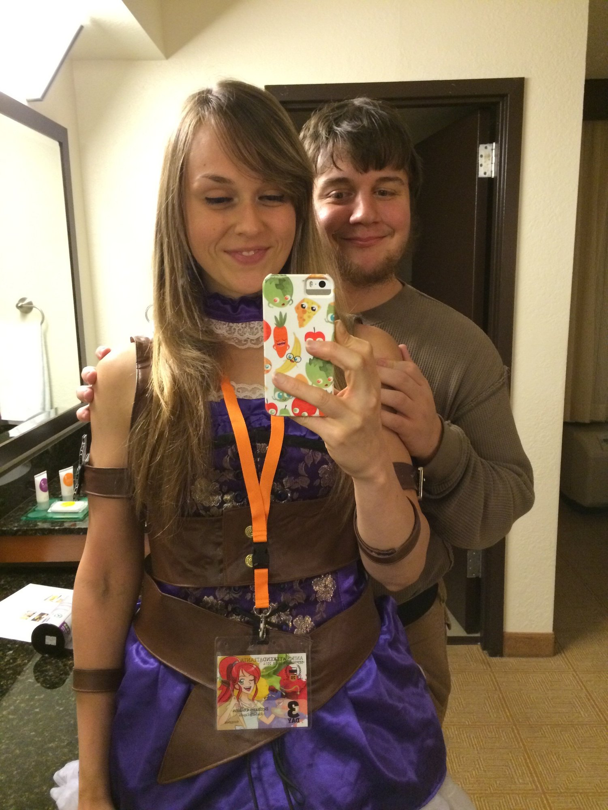
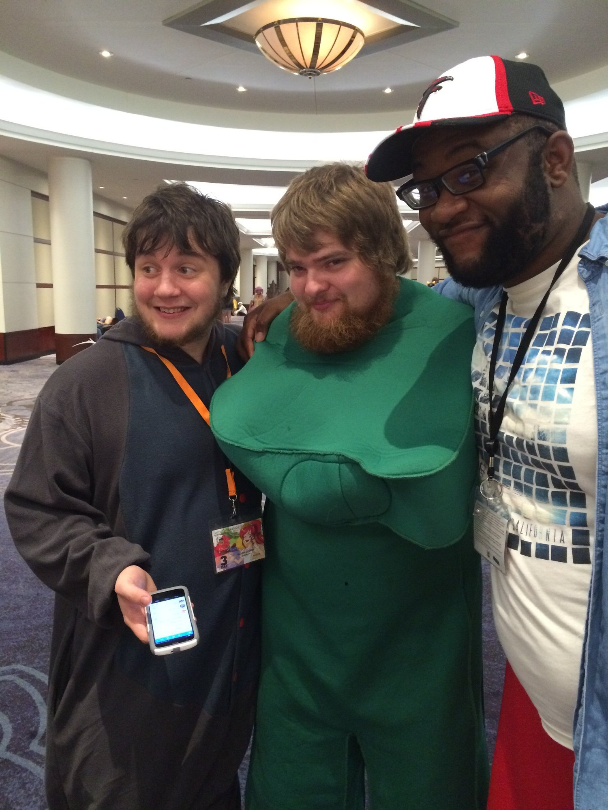
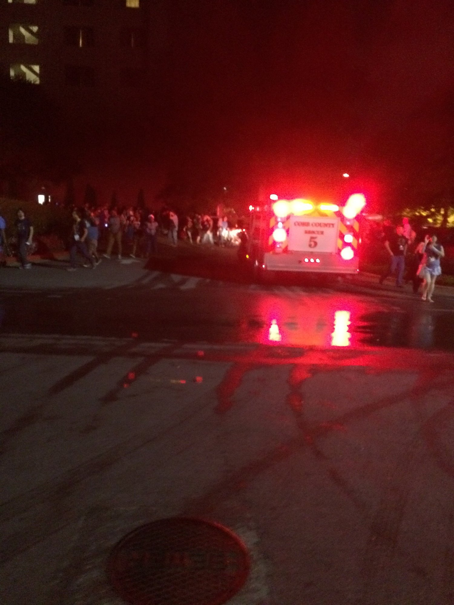
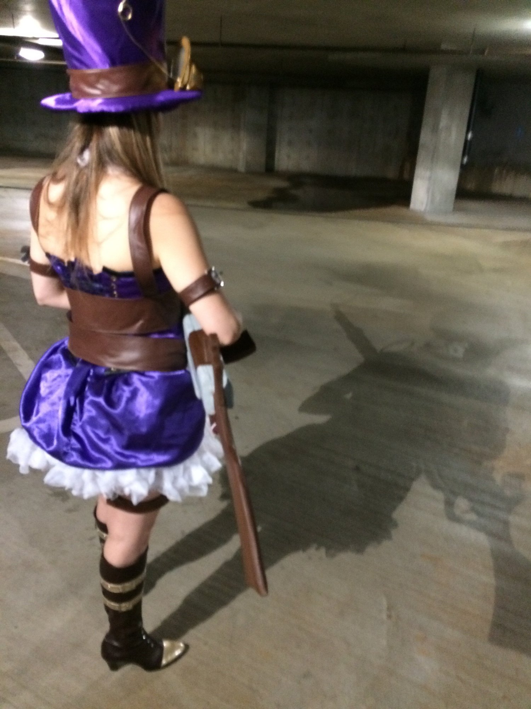
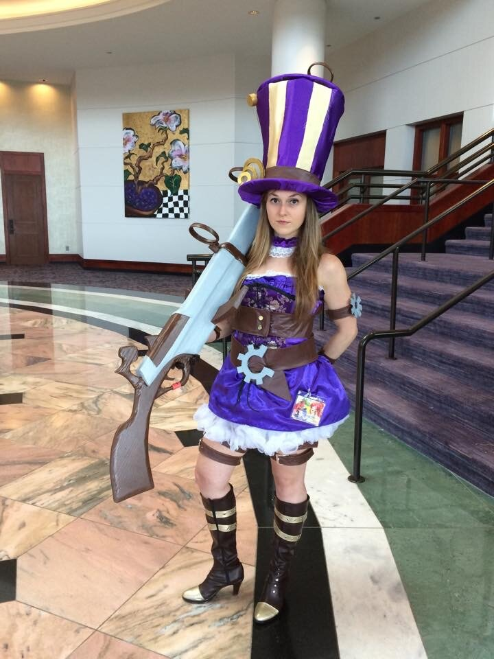
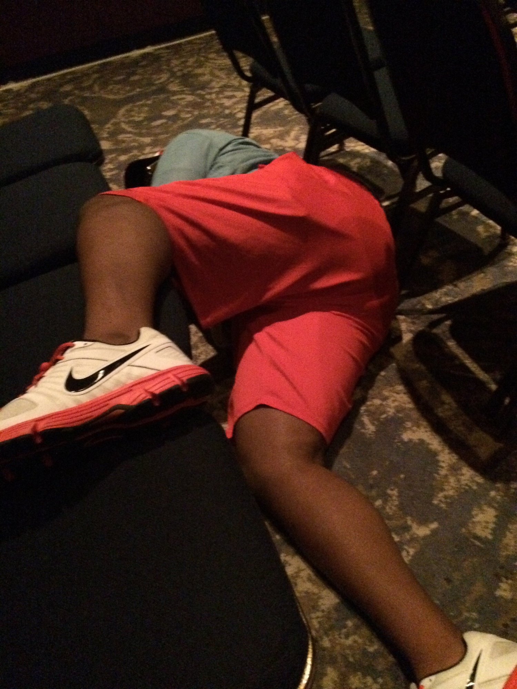
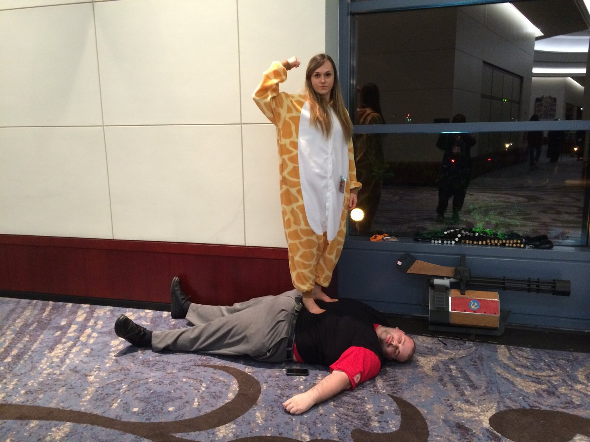
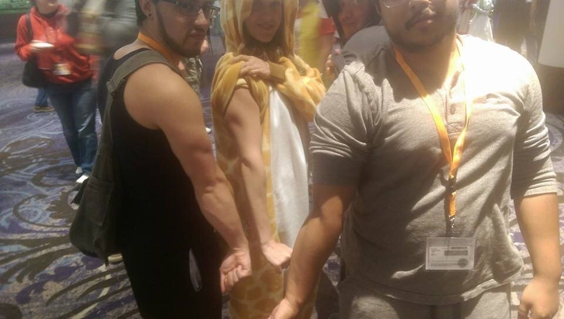

Anime Weekend Atlanta 2014
So every year my friends and I make a huge event out of Anime Weekend Atlanta. This was our 5th year going as a huge group (it ranges around 10 people every year). It's held at a convention center about 30 minutes away, so we get a hotel for the weekend and basically it's one long adventure. They have panels and events all weekend starting Thursday night to Sunday at 5 pm. Literally 24 hours. Our friends have gone separate ways or get busy with jobs now, so it's nice to recollect every year at AWA at least.
Each year we've learned more and gotten more skilled at con-going such as best places to park, what panels are worth seeing, where to get the cheapest lunch, etc. We've also improved with cosplaying as the years go by. I coordinate with Jesse every year. The first year we just went in black/grunge clothing for fun. Year 2 - Jynx and Mr. Mime pokemon 3 - Raven and Red X from Teen Titans. 4 - Caitlyn and Jax from League of Legends 5 - Caitlyn and Ziggs from League of Legends. I repeated Caitlyn this year because honestly... it was so much work. It took months of preparation to make this cosplay and about 300-400 dollars... So much sewing, planning, gathering. The best part is definitely the 6 foot gun that Jesse built for me out of wood. We both invested a lot of time in it. I also feel like I play the role of Caitlyn perfectly for my appearance and body type (not to mention the fact that she uses cupcake traps) so I love being Caitlyn. It's both a compliment and frustrating to be stopped for pictures. On one hand, it's nice to know that people think my cosplay is memorable or astonishing. I get reactions most from my gun. Literally "What the F*$%?!" and "I actually ran across the food court to stop you and take a picture" and ":oooooo" were just a few of the reactions, ha. But on the other hand, it is definitely frustrating trying to walk around the con. If there's a panel I want to see, I have to leave 30 minutes early just to walk through the convention center because of pictures. I was bothered by that last year, but this year I simply didn't really plan to see any panels. The most panels we see are late at night anyways, so I changed out of my cosplay before the night panels.
At night, I changed into my giraffe onesie. I also convinced Jesse, Heidi, and Orietta to wear onesies too and make it a onesie party. Best. Idea. Ever. We had pockets for once, were super comfy, were warm (THE CON WAS FREEZING), and didn't get stopped for pictures. Like I said, Saturday night panels are when things get crazy. The usual plan: head back to the hotel around 6-8 pm and pregame. I don't drink alcohol, but my friends do and I have fun through their enjoyment and general sloppiness. In past years I've gotten beyond frustrated from their drunkenness (JESSE AND JUAN AWA 2013), but generally it's okay hahaha. 2013 is a whole nother story. But basically, since everyone is drunk, each AWA is unique since you literally can't predict what foolishness will take place. At all. Each year tops the last.
This year was insane. I'd say we made the most friends this year. I love AWA because it's just a place where everyone accepts everyone else and it's a place to truly be yourself. There is no judging and conversations are easy. My favorite interactions this year:
- Friday night we saw a super drunk guy dressed in a Gumby outfit. He was stumbling drunk. He was being taken away by two people dressed as Nazis. And held hostage. The hotel is set up to where you can see the lobby from all around, so everyone could see. And the hotel started chanting "Free Gumby! Free Gumby!" hilarious. But to make it better, we saw him again Saturday. Drunk once again, but not as much. I asked "Oh so you've been freed?!" and he stops...and slowly removed the head of his outfit so we could see his face... and he calmly asks "Who knows about that?!" I respond "man everyone. everyone." and we laughed because he said security officers told him all day Saturday not to do that again. So Jesse and Reggie took a picture with him. But they were drunk too and don't remember me taking the picture HA. Best.
- Every year we miss the Manime panel, but this year we finally made it. While waiting for Manime, we made a friend. A college sophomore CS major at Georgia Tech! We bonded over going to the same school (I'm an alumnus) and I generally just annoyed him. He was socially awkward and I insisted on being his friend. We gave him caramel apple oreos out of our bookbag.
- Also at Manime, the guy in front of me was a very big guy. I don't even freaking know how or why, but he asked and I agreed to giving him a back massage by walking on his back. I've never done this before. We left the panel early and my friends didn't even know where I went until 10 mins later; they were drunk and perplexed to find me, in my giraffe onesie, walking on a large man's back. I did this for about 30 mins and we casually chatted and it was fun. And apparently I'm very good at deep feet-to-back massages. I got all the pops out.
- We gave Reggie's hotel neighbor a whole bunch of hunch punch because we made too much. And somehow it tasted literally just like cherry Tylenol. Adding cran grape juice? Instantly became grape Tylenol. Science, man. They seemed confused as to why we gave them free liquor, but didn't refuse it ha. We found them later at the con and later added them on facebook.
- Reggie passed out for a hot minute in a past-midnight panel after downing some cheerios. Then abruptly woke up and shouted that the panel was lame and we had to go. Like, the whole room echoed loud. It was hilariously embarrassing
- Jesse lost his ID and got so pouty about it. Last year, he lost MY ID. This year, karma. But after searching for about an hour that night, he gave up. And it was there the next day in lost and found.
- We made friends with a separate group of friends. I think somehow we were already connected?... One girl is friends with Jesse's little brothers or something like that. Idk. But we'd seen them Friday too. They all dressed as LoL characters too so insta-bonding. Best outfit was definitely a male Nidalee that even got hit on by men.
- At 1:30 AM (Saturday night-Sunday morning) the HOTEL FIRE ALARM WENT OFF. Twice. Once was due to smoking in the hotel but once was due to someone just pulling it for fun.... Either way, it was due to people being stupid. The entire hotel and convention panels had to be evacuated........ The fire truck came and everything. It was infuriating. This is when we lost friends and got separated and spent a good while outside chatting with the new group of friends. Usually on Saturdays we watch late-night Hentai because the commentary from the crowd is hilarious. But since the fire alarm threw off everything, we simply walked a mile back to our hotel since nobody was in a condition to drive.
- Javi and Ori getting in a huge fight over nothing of importance at all. "Ori is the new Kim" because I had a blow up outburst like that last year. Basically whoever is the most sober is who ends up the most aggravated, apparently. Ha.
- From then on to about 4 am ish, we played Mario Party on the N64 system until male Nidalee's friends came to pick him up. We lost Reggie and Heidi at the fire alarm but found them both sleeping comfortably at the hotel somehow... idk. But passed out Reggie woke up to find our new friend and I talking to him. After a few mins he goes. "Wait who the heck is this half naked guy in my room." "Raymond aka male Nidalee?" "Oh okay *falls back sleep*"
- "Are you drunk? You're not drunk enough. Here have some punch" famous last words
- #funimation #cometoourbooth
- Crab-dancing guy in the rave. I think I forgot to tell Juan about this but that's his signature move that was stolen.
- Not talking to Jesse's high school friend Jimmy all year, but always finding him randomly creeping at AWA. He's seriously a one-time-a-year friend hahaha. And he always manages to appear, we don't even have to contact him. It's a skill.
I realize that half of this won't even make sense. But the overall point is that AWA is a blast of foolishness and nothing compares. Best thing every year. Let the picture dump commence to correspond with the stories.








